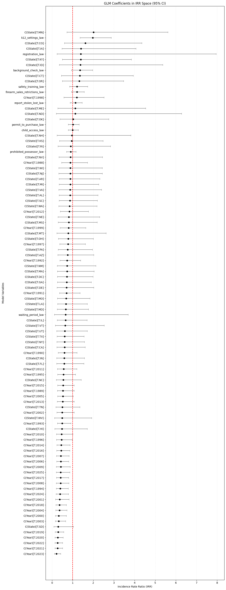

This chart shows the national incident rate over time. The sharp rise in the later years matches the notebook’s main conclusion that recent time trends stand out more clearly than most individual policy changes.
Prepared from visible notebook outputs only. No new visuals were created.
This project looks at school shooting patterns across U.S. states over time and compares those patterns with state firearm policies. The notebooks focus on two practical questions: whether policies are linked to how often incidents happen, and whether they are linked to how harmful those incidents are.
The analysis uses state-by-year data, public school enrollment, and policy indicators from 1987 forward. Across the notebooks, the clearest pattern is a strong rise in recent years, while most policy effects remain small or unclear in the main models.
What it was used for: Measuring how often school shooting incidents happen in each state and year.
What question it answers: Are policy changes linked to more or fewer incidents?
Target variable: Incident count.
What it was used for: Measuring the total amount of harm across each state and year.
What question it answers: Are policy changes linked to more or fewer total victims?
Target variable: Total victims.
What it was used for: Measuring how severe incidents are once an incident has already happened.
What question it answers: Are policy changes linked to higher or lower harm per incident?
Target variable: Victims per incident.
What it was used for: Checking whether the same broad pattern still appears under a stricter comparison.
What question it answers: Do the overall policy and time patterns still point in the same direction?
Target variable: Incident count.
This chart shows the national incident rate over time. The sharp rise in the later years matches the notebook’s main conclusion that recent time trends stand out more clearly than most individual policy changes.

This chart shows the school enrollment trend used to compare states and years on a fairer basis. It gives context for why the analysis looks at rates rather than only raw totals.

This chart shows the main incident-count model. Most policy estimates sit close to the no-clear-change line, while the later-year effects are much more noticeable.

This chart shows the model for total victims. It tells the same broad story: the later years matter more than most policy terms in the printed notebook results.

This chart shows the model for harm per incident. In this output, the K-12 settings policy measure is the clearest policy signal and is linked to higher victims per incident.